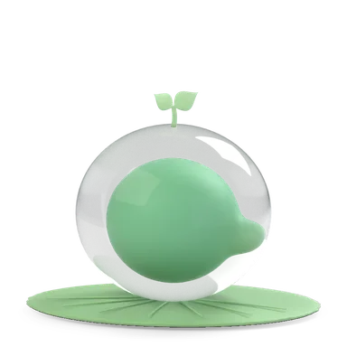

많이 쓰는 일기 앱 6개를 보고, 꿈틀 사용자에게 진짜 편한 것만 골랐다. 결론: 기분 한 번 + 오늘 한 일 고르기 + 한 줄이면 끝나는 체크인(하루콩·Daylio), 카드로 쌓이는 기록(Apple 저널·Day One), 캐릭터는 반응만(Finch). AI 대화로 일기 쓰기(Rosebud류)는 빼고, 꿈틀만 가진 할 일·일정 데이터를 "오늘 한 일"로 자동으로 꺼내 준다.
| 앱 | 쓰는 방식 | 기록 보기 | 잘하는 것 | 아쉬운 점 | 꿈틀이 가져올 것 |
|---|---|---|---|---|---|
| 하루콩 국내 · 한 해 2,960만 건 | 기분콩 5개 → 활동 아이콘 탭 → 사진 한 장·한 줄 메모. 몇 초면 끝 | 월 달력에 기분콩 | 압도적으로 빠름, 귀여운 콩, 활동과 기분의 관계 통계 | 긴 글 쓰기에는 약함 | 기분 5개 + 활동 고르기 + 한 줄, 달력에 기분 얼굴 |
| Daylio | "두 번 탭": 기분 → 활동 → (선택) 메모 | 달력·통계·흐름 그래프 | 글 안 써도 기록이 쌓임, 힘든 날에도 부담 없음 | 통계 화면이 많고 무거움 | 글은 선택. 활동만 골라도 저장 |
| Day One | + 눌러 풍부한 편집기. 날짜·시간·날씨·위치 자동 | 타임라인(최근 글 카드)·달력·연속 기록·"이날의 기록" | 자동 정보, 타임라인, 오래 쓰는 사람에게 강함 | 기능이 많아 처음엔 어렵고 유료 위주 | 타임라인 카드, 자동으로 붙는 정보(우리는 할 일·일정), "1년 전 오늘" |
| Apple 저널 | + 누르면 사진·장소·운동으로 만든 "쓸거리 제안"과 돌아보기 질문 | 부드러운 색 바탕 위 카드 목록 | 쓸거리를 앱이 먼저 꺼내 줘서 시작이 쉬움, 단순함 | + 단추가 작아 찾기 어렵다는 평 | 쓸거리 제안 = 오늘 끝낸 할 일·일정. 큰 + 단추 |
| Finch | 앱을 열면 기분 체크인 → 펫의 집. 돌아보기 질문 | 펫 성장·기록 | 캐릭터가 "숙제"를 놀이로 바꿈, 압박 없음 | 일기 자체 기능은 얕음 | 캐릭터가 먼저 "오늘 어땠어?" 묻고, 쓰면 한 줄 반응 |
| Stoic · Rosebud | 아침·저녁 짧은 질문(Stoic), AI와 대화하며 돌아보기(Rosebud) | 기분 분석·보고서 | 깊은 성찰, 질문이 좋음 | 시간·AI 비용, 유료, 매일 하기엔 무거움 | 질문은 칩으로만(막힐 때). AI 대화로 쓰기는 안 함 |

오랜만에 친구랑 저녁 먹었다. 이야기하다 보니 시간 가는 줄 몰랐다. 요즘 쌓였던 게 좀 풀린 느낌.
교정 상담 받고 왔다. 생각보다 기간이 길어서 좀 놀랐지만, 그래도 미뤄 왔던 걸 드디어 해서 후련하다.
오랜만에 친구랑 저녁 먹었다. 이야기하다 보니 시간 가는 줄 몰랐다.
| # | 질문 | 추천 | 이유 |
|---|---|---|---|
| ① | 일기 탭 첫 화면은? (v3: 오늘 쓰기 화면 / v4: 체크인 + 타임라인) | v4 — 체크인 카드 + 타임라인 | 열면 바로 쓸 수도(기분 탭), 지난 기록을 볼 수도 있다. Apple 저널·Day One·하루콩 모두 기록이 첫 화면. |
| ② | "오늘 한 일" 칩(끝낸 할 일·일정 자동)을 넣을까? | 넣는다 | Daylio·하루콩의 "활동 고르기"를 우리 데이터로 자동화 — 꿈틀만 할 수 있는 것. 글을 안 써도 의미 있는 기록. |
| ③ | 캐릭터는? | 체크인에서 묻고, 저장하면 한 줄 반응만(대화 없음) | Finch처럼 압박 없이 동기만. 대화로 쓰기는 무겁고 AI를 기다려야 했다. |
| ④ | 사진·"1년 전 오늘"은 v1에? | 사진은 다음, 1년 전 오늘은 넣기(글만, 가끔) | 사진은 업로드·저장 공간이 필요. 1년 전 오늘은 기존 데이터로 바로 된다. |
조사 출처: 하루콩(App Store) · 하루콩 2,960만 건(유니콘팩토리) · Daylio 화면(ScreensDesign) · Daylio 분석(mHealth) · Day One 디자인 비평(Pratt) · Day One 기능 · Apple 저널 디자인 비평(Pratt) · Apple 저널 첫인상(The Sweet Setup) · Finch(Paste) · Stoic 비교 · Rosebud